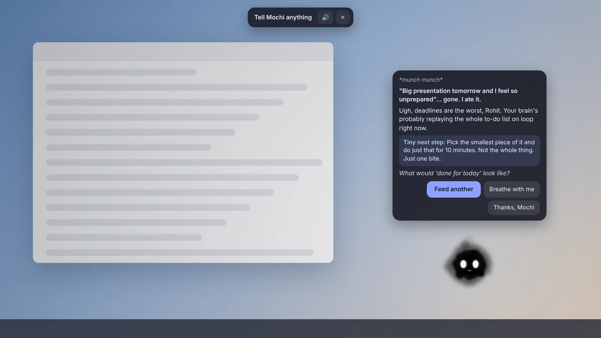
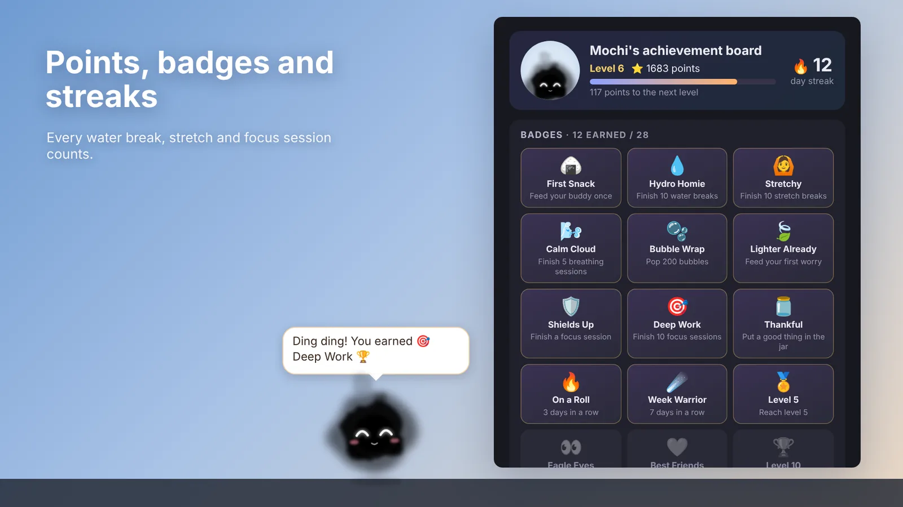

Shy and sweet
Mochi
Um... would you drink some water? For me? 💧
Desk buddy for Windows
Mochi lives at the bottom of your screen. It nudges you to drink water, stretch and rest your eyes, keeps you company through long days and night shifts, and listens when work gets heavy.
Free for Windows 10 and 11. No account, no ads, and nothing leaves your computer.
Um... would you drink some water? For me? 💧
A day with Mochi
Greets you by name and asks how you're feeling with five little faces.
The 20-20-20 rule: look 20 feet away for 20 seconds, every 20 minutes.
A sip every 45 minutes. Ignore it and your buddy floats to the middle of the screen and sulks.
Every hour it stretches with you, then cheers when you click Done.
Start a focus session and it goes quiet, holds the reminders and celebrates when you finish.
It yawns and goes to sleep. Work nights? It learns your shift and sleeps when you do.
Feed me a worry
Then it says something kind that fits the worry, whether it's a deadline, money, people or self-doubt, and suggests one tiny next step. Share good news and it throws you a confetti party instead.

Meet the buddies
Each one moves, talks and pouts its own way. Pick the one that feels like you, and switch any time.
Shy and sweet
Um... would you drink some water? For me? 💧
Fiery hype coach
WATER BREAK! Champions hydrate! 💧🔥
Calm and wise
Rivers need rain. So do you 💧
Dreamy night owl
Water break! Earth is 71% water. You should be at least a bit 💧
Warm and hopeful
You've got this 💗 One sip of water first?
Speaks your language
About 950 lines across three languages, and it never says the same thing twice in a row. In Hindi it even uses the right grammar for the buddy you picked.
Stretch with me? I'll go first... *stretches* 🙆
उम्म... थोड़ा पानी पियोगे? मेरे लिए? 💧
PAANI BREAK! Champions paani peete hain! 💧🔥
Small wins add up
Every glass of water, stretch and focus session earns points. Keep your streak, unlock badges from First Snack to Focus Legend, and fill a gratitude jar with one good thing a day.

Mochi for teams
Give your people a friendly nudge to take breaks, with your own helplines and HR contacts built in. Team insights stay anonymous, and nobody's worries or moods ever reach a dashboard.
Private by design
Mochi makes no network requests. No account, no analytics, no ads and no cloud. Your name, moods and gratitude notes live in one file on your own computer, and worries are never saved at all.